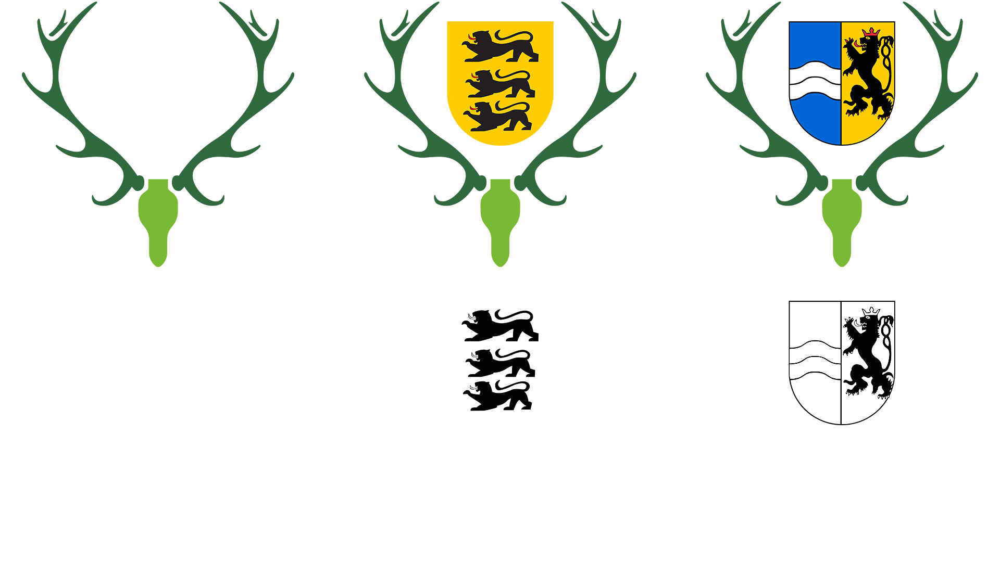

Heidelberger Jägervereinigung
Im Rahmen einer Prüfung im Studium wurde ein Kommunikationskonzept für die Heidelberger Jägervereinigung (HDJV) entworfen. Primär war es das Ziel eine jüngere Zielgruppe anzusprechen und den eher "schlechteren" Ruf zu einem guten zu wandeln.
Hierfür mussten möglichs viele Menschen angesprochen werden, die noch keine feste, schlechte Meinung, zum Thema Jagd hat. Hier wurde sich für einen Livestream entschieden.
Digitale Maßnahmen haben sich zunehmend auf den Livestream fokussiert. Allerdings wurden auch drei neue Logos erstellt bzw. die alten aktualisiert und erneuert. Auch eine moderne Webseite wurde geplant und gestaltet sowie ein neues Gesicht für die Social-Media Kanäle.
Logo
Die Logos sind von dem alten Hirschkopf-Logo der HDJV inspiriert. Das alte Logo war in keiner guten Qualität auffindbar, weshalb ein Neues erstellt wurde.
Zu dem Hirschkopf gibt es auch noch zwei andere Varianten des Logos. Zum einen mit dem Baden-Württemberg Wappen und mit dem Rhein-Neckar Wappen.